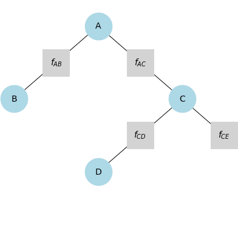

Projects
Ongoing - Teaching and Learning Notes
A collection of my notes (as Jupyter notebooks) of interesting materials that I learned or had to teach.
2024 - SVGDCpp

One of my research projects involve the design of a self-calibration algorithm to track sensor degradation levels in a swarm of faulty robots. My general approach was using a recursive Bayes estimator, which led me to the discovery of the Stein Variational Gradient Descent, a general purpose Bayesian inference algorithm. My options to use it in a C++ program was limited, which led to my development of this library.
2015 - Online Portfolio
As an engineering student, coding is quite an essential skill to have. I came across learning HTML when I joined the Malaysia Midwest Games 2015 Committee's Web Department to help out. My friends introduced me to sites like Codecademy and Code School, which I find incredibly accessible to learn coding skills. With much encouragement by my peers, I started learning HTML and CSS through Codecademy, which began sometime in March.
I wanted to create an online portfolio that could elaborate on the skills and experiences that I couldn't do so on my résumé, plus show employers myself from a less academic perspective. It took me about 5 months to learn, design, and set up my online portfolio. I used the HTML5UP template TXT, which provided the base design for this website.
I'd like to voice my appreciation to Vicky Ong, Puvindren Supramaniam for providing some of the images on this website. I'd also like to thank Qyira Yusri for spell-checking my website, and Sayyid Sofwan, Eugene Goh, Yusuf Abdullah, Suffian Hamzah for sharing their web building knowledge.